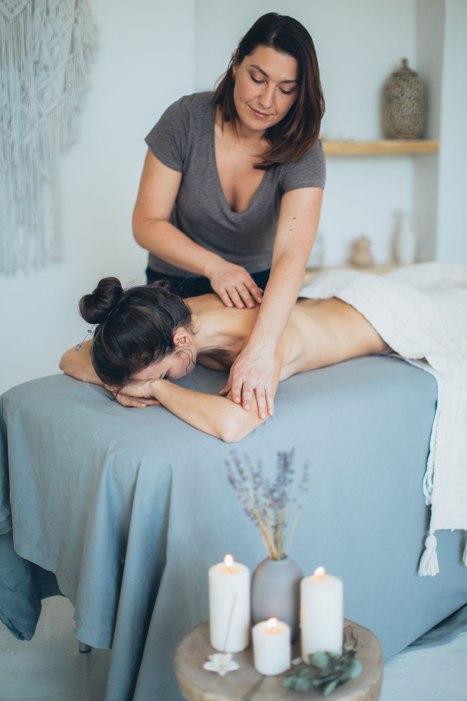

Visit Bodyology Therapeutic Massage
A therapist-owned therapeutic massage studio in Boise, with 60, 90, and 120 minute sessions.
Address: 1409 W Main St Ste 100, Boise, ID 83702
Hours: Sunday 11:00 AM to 7:00 PM, Monday to Thursday 9:00 AM to 9:00 PM, Friday 9:00 AM to 6:00 PM, Saturday 10:00 AM to 6:00 PM.
Phone: (208) 908-3387
Gallery



All gallery photos are stock photos, labeled as such. They show the kind of work and setting described on this page, not this business.
Contact
Bodyology Therapeutic Massage serves Boise, ID. Questions? Call (208) 908-3387.